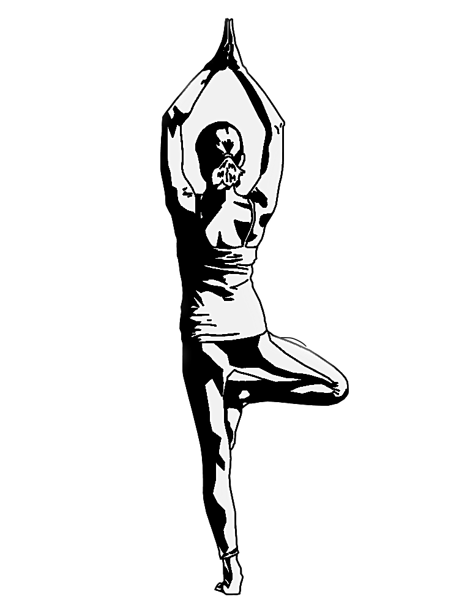

Instructions |
Benefits |
|
|---|---|---|
| > Get into position > Tree pose often starts from mountain pose > both feet planted firmly on the ground and your weight adequately distributed > so that you are balanced > Bend one leg at the knee. Choose the leg you are going to fold in first > Lengthen your body > Hold and repeat |
 |
> Stretches your feet > Tree pose can help stretch and strengthen the ligaments and tendons in your feet > Improves balance > Tree pose requires proper weight distribution and posture, which can help provide stability to your groin, thighs, hips, and pelvis > Strengthens your core. |